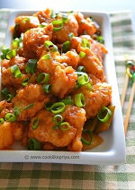
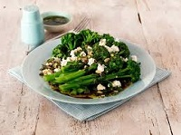
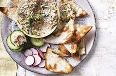
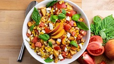
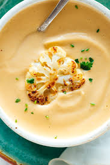
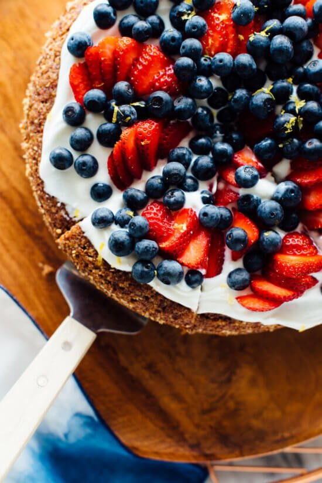
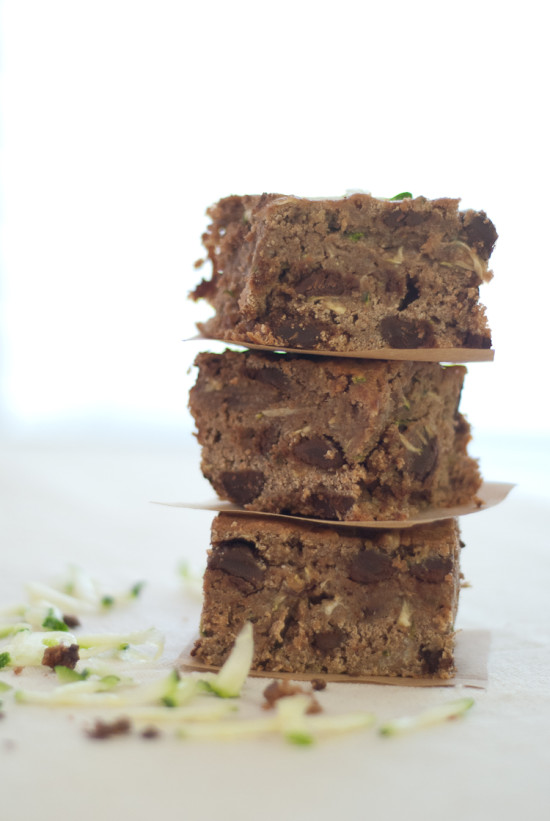

| Crispy Sweet and Tangy Cauliflower | ||
|---|---|---|
|  |
Appetizer made with cauliflower, corn flour, soya sauce, vinegar, chilli sauce, ginger and garlic. To make the cauliflower, it is first coated in batter and then deep fried until crisp. Then these are tossed in sweet, sour and hot manchurian sauce. |
$4.99 |
| Sauteed Broccoli with Bleu Cheese | ||
|  |
Broccolini is a hybrid of broccoli and kale with a slightly nutty flavor. At its best, it’s cooked until the stalks are just crisp-tender and the small florets turn bright green. Here, a rich, creamy blue cheese dressing tops off the roasted broccolini with that wonderful salty, tangy, blue cheesy bite. |
$5.99 |
| Warm Pita's served with Hummus | ||
|  |
The tasty legumes called chickpeas, garbanzo beans or ceci (depending upon the cuisine in which they are used) boast a rich, nutty character that complements many dishes. They're the starring ingredient in hummus, a Mediterranean specialty that is spread on warm pita bread. |
$6.99 |
| Favorite Greens with apples and Cranberries | ||
|---|---|---|
|  |
This salad features fresh spring greens, tart Granny Smith apple, sweet dried cranberries and creamy goat cheese, tossed in a simple apple cider vinaigrette |
$6.99 |
| Creamy Roasted Cauliflower Soup | ||
|  |
Behold! Lusciously creamy, yet cream-less, cauliflower soup. This cauliflower soup recipe will absolutely satisfy your craving for warm, creamy soup—no cheese required. |
$6.99 |
| Gluten Free Almond Cake with Berries on Top | ||
|---|---|---|
|  |
This gluten-free almond cake is lightly sweetened with maple syrup (or honey), infused with fresh lemon flavor, and topped with creamy Greek yogurt and fresh strawberries and blueberries. It’s a winner! |
$6.99 |
| Dark Chocolate Brownies | ||
|  |
Decadent zucchini brownies made with whole wheat and dark chocolate chips. So rich and moist, you’ll never want to go back to regular brownies! |
$6.99 |